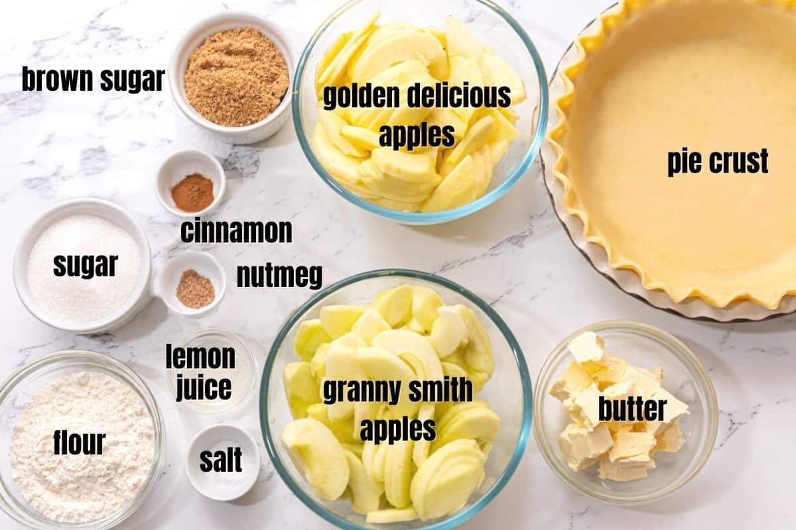

Apple Pie Recipe
Ingredients:
Quantity
Ingredient
6
Granny Smith apples, peeled, cored, and sliced
1 cup
Granulated sugar
1 tsp
Ground cinnamon
1/2 tsp
Ground nutmeg
2 tbsp
All-purpose flour
1 package
Refrigerated pie crusts (2 crusts)
cd "

Instructions:
Preheat your oven to 425°F (220°C).
In a large mixing bowl, combine the sliced apples, sugar, cinnamon, nutmeg, and flour. Toss until the apples are coated evenly.
Unroll one pie crust and place it in a 9-inch pie dish.
Pour the apple mixture into the crust.
Unroll the second pie crust and place it on top of the apples. Trim any excess crust and crimp the edges to seal the pie.
Make several small slits in the top crust to allow steam to escape.
Bake in the preheated oven for 45-50 minutes, or until the crust is golden brown and the filling is bubbling.
Remove from the oven and let it cool before serving.